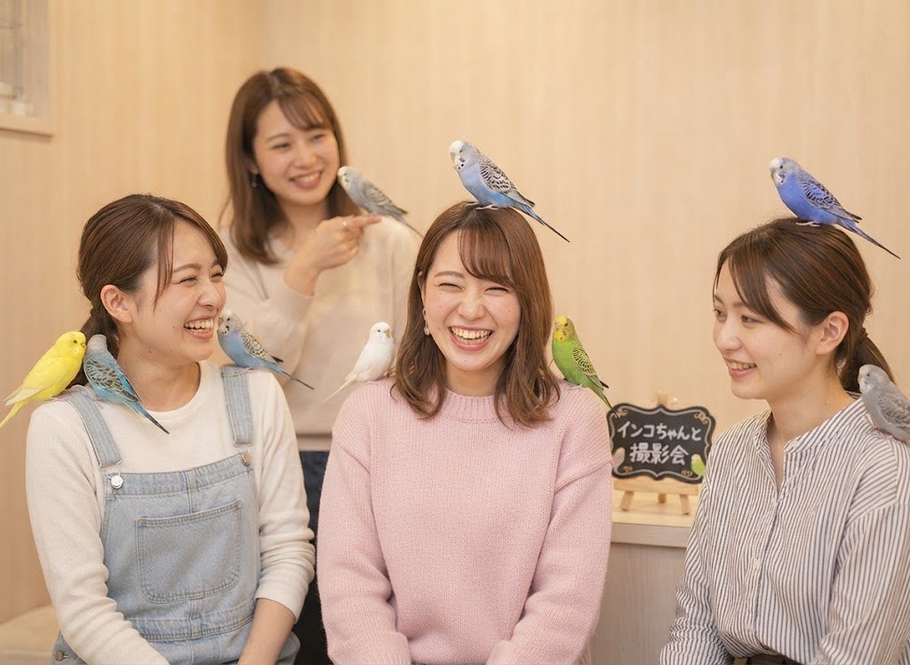
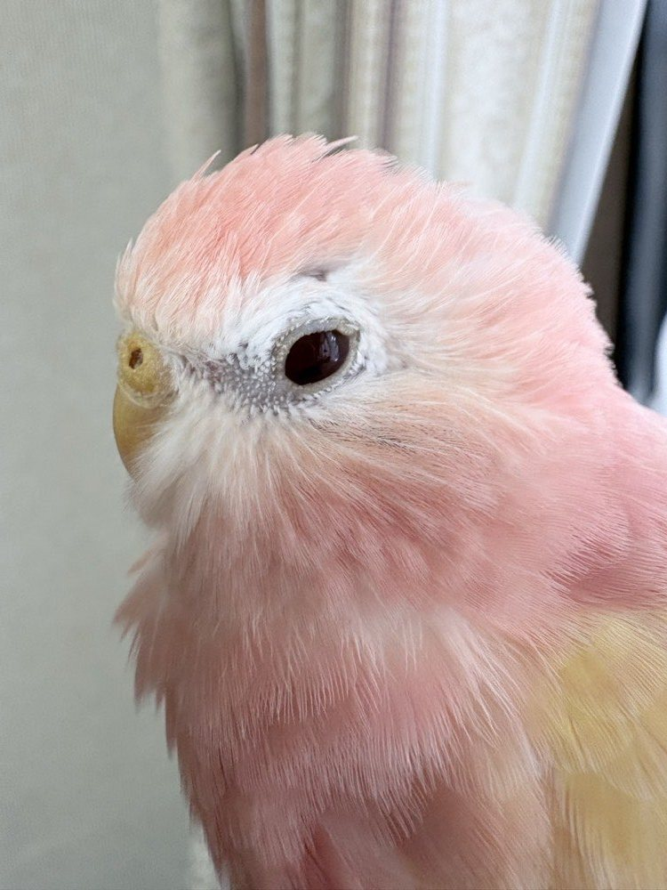
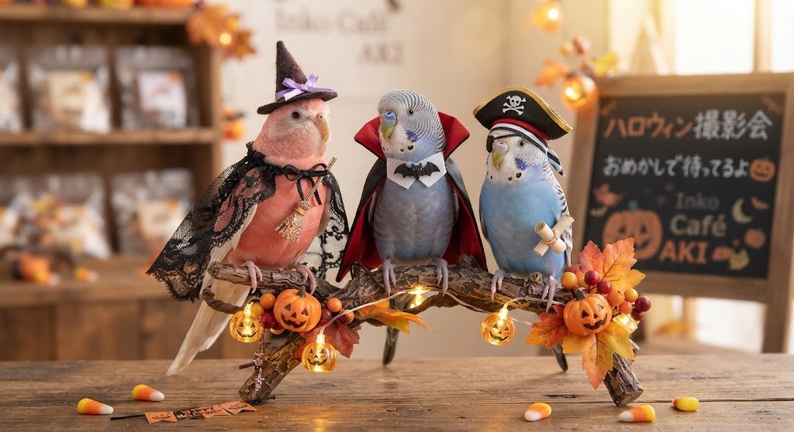
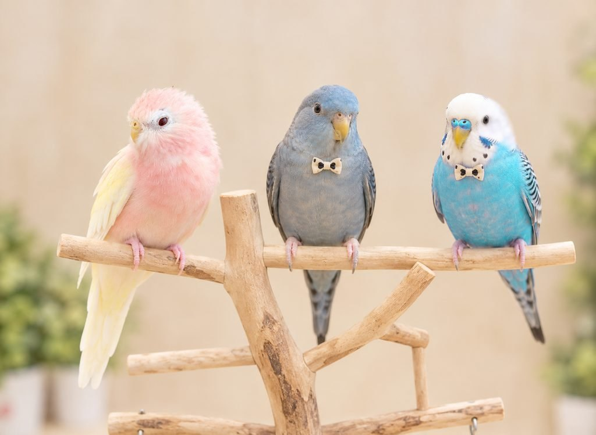
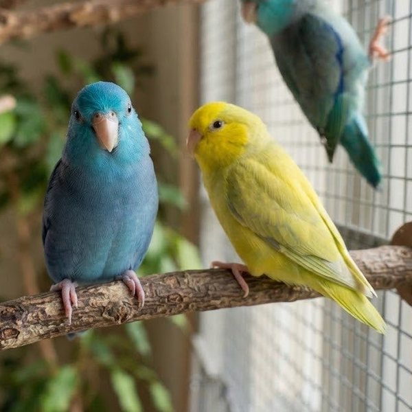
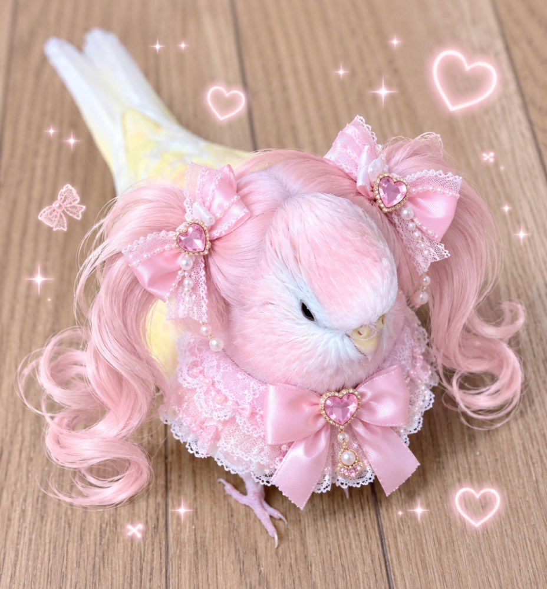

インコちゃんと撮影会
頭にちょこん、肩にちょこん。はい、チーズ！
月に2回ひらく、インコたちとの撮影会。スタッフがインコたちを呼んでくれるので、頭や肩にのった“奇跡の1枚”が撮れるかも。お友だちと一緒の参加もおすすめです。


撮影会でできること
-
頭や肩にのった写真
スタッフがインコたちを呼んでくれるので、ふだんより近くで撮れるチャンス。
-
おめかしインコに会える
撮影会の日だけ、インコたちが小さな蝶ネクタイでおめかしします。
-
スタッフが撮ってくれる
みんなで写りたいときは、スタッフがシャッターを押します。
10月はハロウィン撮影会


仮装したインコたちと、
ハロウィンの1枚を
10月の撮影会は、インコたちがハロウィンの仮装でお出迎え。かぼちゃやおばけの小物も用意して待っています。
- 開催日：10/11（日）・10/25（日）
- 時間：① 11:00〜 ② 14:00〜（各回4名まで）
- 仮装はインコの様子を見ながら短い時間だけ
撮影スペース


撮影スペースは、いつでも使えます
やわらかい木の壁と、ナチュラルな止まり木の撮影スペース。撮影会の日以外も、どのプランでも自由に使えます。
- 窓からの光で、明るくふんわり撮れます
- 止まり木にインコがのってくれたらシャッターチャンス
- 蝶ネクタイのおめかしは撮影会の日だけ


おめかしAKIにも会えるかも
撮影会の日は、看板インコたちもちょっぴりおめかし。どんな姿で会えるかは、当日のお楽しみです。
- おめかしはインコの様子を見ながら短い時間だけ
- いやがる子には無理につけません
撮影会の流れ
-
開始10分前
ステップ1：受付・手洗い
お名前を伝えて、手洗いと消毒をします。荷物とアクセサリーはロッカーへどうぞ。
-
〜10分
ステップ2：撮影のコツとお約束の説明
スタッフがインコたちとの撮り方と、守ってほしいことをお話しします。
-
〜45分
ステップ3：撮影タイム
スタッフがインコたちを呼んでくれます。頭や肩、手にのってくれたらシャッター！
-
〜55分
ステップ4：おやつタイム
がんばってくれたインコたちに、手のひらからおやつをあげましょう。
-
60分
ステップ5：おしまい
撮れた写真をみんなで見せ合って終了です。ドリンクはこのタイミングでもOK。
上手に撮るコツ
-
インコの目の高さで
少しかがんで、インコと同じ目線から撮ると、表情までかわいく写ります。
-
窓ぎわの自然光で
フラッシュの代わりに、窓からの光を使うとふんわり明るい写真に。
-
連写か動画で
インコはすばやく動くので、連写や動画からベストショットを選ぶのがおすすめ。
料金・開催日
- 料金
- ¥2,500（税込）
- 時間
- 60分
- 含まれるもの
- 1ドリンク／おやつあげ体験／スタッフの撮影サポート
- 開催日
- 毎月 第2・第4日曜日① 11:00〜 ② 14:00〜
- 定員
- 各回 4名まで（予約制）
- ご予約
- InstagramのDMで「撮影会希望」とお送りください
撮影会の前に読んでね
- フラッシュはインコたちの目に強すぎるので、必ずオフにしてください。
- インコを頭や肩に無理にのせたり、つかんだりしないでね。のってくれるかは、インコたちの気分次第です。
- ピアス・ネックレス・指輪・時計などのアクセサリーは、入室前に外してロッカーへ入れてください（インコがかじると金属中毒の原因になるため）。ヘアピンや金属のついた髪飾りも外してね。
- 香水やハンドクリームは、インコたちのために控えめにお願いします。
- 撮影会の時間は、通常のプランはお休みになります。
よくある質問
スマホでも大丈夫ですか？
もちろんです！参加者のほとんどがスマホで撮っています。
一眼レフや三脚は使えますか？
カメラはOKです。三脚は、インコたちがぶつかると危ないので、ご遠慮いただいています。
インコは必ず頭にのってくれますか？
インコたちの気分次第なので、お約束はできません。のってくれなくても、近くでかわいい写真が撮れるようスタッフがサポートします。
撮った写真はSNSにのせてもいいですか？
大歓迎です！#インコカフェAKI をつけてくれたら、見に行きます。ほかのお客さまが写っている場合は、ご本人に確認してね。